摂津国一の宮、被害が出ました。 [梅吉]
摂津国の（大阪）一の宮、住吉大社、すみよっさん。
先日の台風でかなりの被害が出ています。
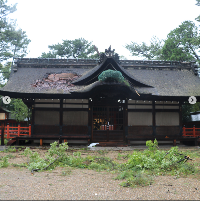
（住吉大社のInstagramより）
ここは敷地内にある大海神社かとおもわれます。
（と思ったらどうやら一宮のようです。7日朝参拝できるようになってます。）

（住吉大社のInstagramより）
ここは二宮かとおもわれます。
昨日５日に住吉大社のHPをみると現在境内全域を閉鎖中ですとのことでした。
今日（６日）実際に行ってみました。
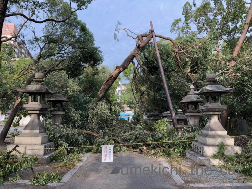
電車通りから本宮の方へ向かう参道のひとつなのですが
倒れた木で塞がれています。
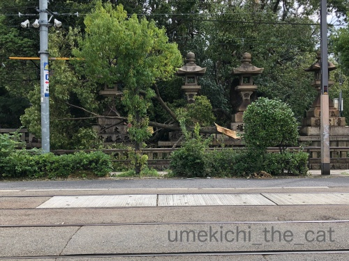
同じく電車通り、大鳥居の横の大きな木が痛々しい姿で折れていました。
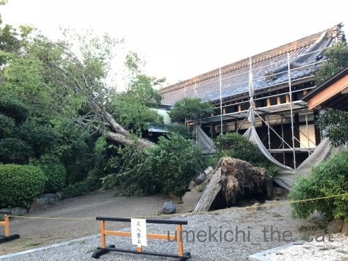
社務所が倒木の直撃を受けたようです・・・
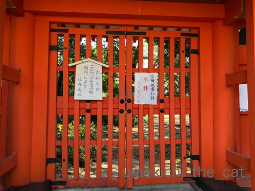
閉まっている門もありました。（摂社の入り口です）
これ以上進んでも中の様子はわからないなと
太鼓橋の手前で（太鼓橋を渡らないと本宮の方へ行けません）帰ることにしました。
まさかこんなに被害が出ているなんて・・・
周りには商店街や商店兼住宅みたいな建物がたくさんありますが
大きな被害を受けている様子は見られません。
みんなすみよっさんが引き受けてくれた？
家に帰って住吉大社のHPを見てみると
なんと昨日一日で手を尽くして二宮、三宮、四宮までは参拝できるようになっていたようです。
地域の一の宮としての責任？矜持？
一の宮の格は伊達ではないなと思いました・・・
すみよっさんには「初辰まいり」というとても大切なご縁日があるのですが
今月のその日は９日。
その日を目処に全面復旧を目指しているのかな。
全面復旧した折にはあらためてお参りに行かなくては。
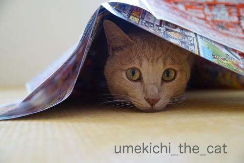
広告の下に潜り込んで嬉しそうな梅吉さんw
あにゃたの「吉」は住吉さんからいただいたんですよ＾＾
･゜ﾟ･*:.｡..｡.:*･゜ﾟ･*:.｡. .｡.:*･゜ﾟ･*･゜ﾟ･*:.｡..｡.:*･゜ﾟ･*:.｡..｡.:*･゜ﾟ･*
大阪の台風が過ぎてやれやれと思っていたら今度は実家のある札幌で地震。
実家での震度はおそらく震度５〜６程ではなかったかと思われます。
壁に亀裂が入って開かない窓があると言っていたので家が少し歪んだのかも。
落ち着いて状況確認をしたら新たな被害が判明するかも、です。
今暮らす分には支障は無く停電は続いているものの水道、ガス共に使えるとのことで
ちょっと安心しております。
おっとの実家では食器棚の中のものが飛び出たようですが
家には特に問題はない様子。
義母は義妹と孫と住んでいるのでテレビは見られなくとも
SNSなどで私の実家よりは入ってくる情報が多いかな。
こういう時は若い人と一緒だと心強いだろうな・・・
両家とも、いえ被災した地域にさらなる揺れがなければ良いのですが・・・
いえいえ、もう世界中どこでも災害はいらないです。
![[ＮＥＷ]](https://blog.ss-blog.jp/_images_e/120.gif) 実家のある東区、6日24時ごろに電力が回復しました。
実家のある東区、6日24時ごろに電力が回復しました。
おっとの実家のある清田区は7日20時ごろ回復しました。
〜追記〜
今回テレビで情報を得ることのできない両親のため（スマホなんて持ってません）
いろいろ情報を集めて知らせていたのですが・・・
SNS上に流れるいい加減で無責任な情報が多すぎることに唖然としました。
SNSはそれを良しとするツールでしょうから仕方のないことなのですが
どうでも良い単なる自分アピールのような情報に
#北海道地震
をつけるのだけは止めていただきたい。
被災して乏しい電源の中で必死で情報を探そうとしている人たちが
探している情報になかなかたどり着けなくなってしまいます。
先日の台風でかなりの被害が出ています。
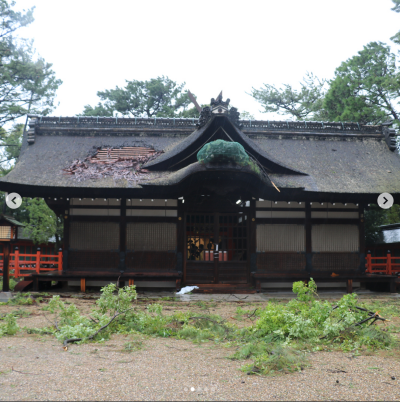
（住吉大社のInstagramより）
ここは敷地内にある大海神社かとおもわれます。
（と思ったらどうやら一宮のようです。7日朝参拝できるようになってます。）
（住吉大社のInstagramより）
ここは二宮かとおもわれます。
昨日５日に住吉大社のHPをみると現在境内全域を閉鎖中ですとのことでした。
今日（６日）実際に行ってみました。
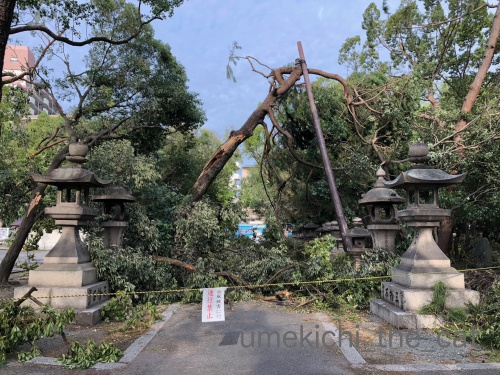
電車通りから本宮の方へ向かう参道のひとつなのですが
倒れた木で塞がれています。
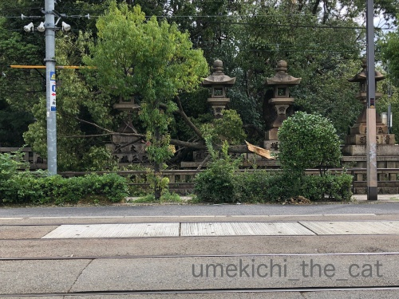
同じく電車通り、大鳥居の横の大きな木が痛々しい姿で折れていました。
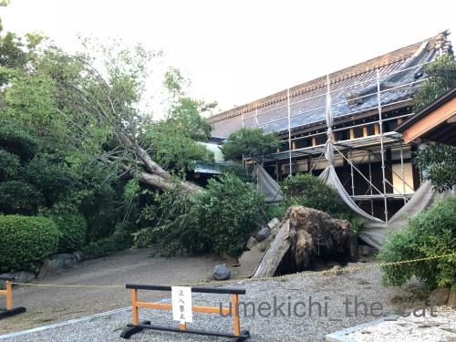
社務所が倒木の直撃を受けたようです・・・
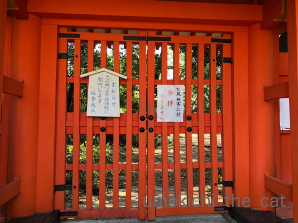
閉まっている門もありました。（摂社の入り口です）
これ以上進んでも中の様子はわからないなと
太鼓橋の手前で（太鼓橋を渡らないと本宮の方へ行けません）帰ることにしました。
まさかこんなに被害が出ているなんて・・・
周りには商店街や商店兼住宅みたいな建物がたくさんありますが
大きな被害を受けている様子は見られません。
みんなすみよっさんが引き受けてくれた？
家に帰って住吉大社のHPを見てみると
なんと昨日一日で手を尽くして二宮、三宮、四宮までは参拝できるようになっていたようです。
地域の一の宮としての責任？矜持？
一の宮の格は伊達ではないなと思いました・・・
すみよっさんには「初辰まいり」というとても大切なご縁日があるのですが
今月のその日は９日。
その日を目処に全面復旧を目指しているのかな。
全面復旧した折にはあらためてお参りに行かなくては。
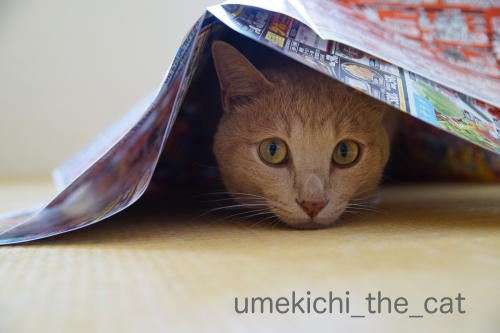
広告の下に潜り込んで嬉しそうな梅吉さんw
あにゃたの「吉」は住吉さんからいただいたんですよ＾＾
･゜ﾟ･*:.｡..｡.:*･゜ﾟ･*:.｡. .｡.:*･゜ﾟ･*･゜ﾟ･*:.｡..｡.:*･゜ﾟ･*:.｡..｡.:*･゜ﾟ･*
大阪の台風が過ぎてやれやれと思っていたら今度は実家のある札幌で地震。
実家での震度はおそらく震度５〜６程ではなかったかと思われます。
壁に亀裂が入って開かない窓があると言っていたので家が少し歪んだのかも。
落ち着いて状況確認をしたら新たな被害が判明するかも、です。
今暮らす分には支障は無く停電は続いているものの水道、ガス共に使えるとのことで
ちょっと安心しております。
おっとの実家では食器棚の中のものが飛び出たようですが
家には特に問題はない様子。
義母は義妹と孫と住んでいるのでテレビは見られなくとも
SNSなどで私の実家よりは入ってくる情報が多いかな。
こういう時は若い人と一緒だと心強いだろうな・・・
両家とも、いえ被災した地域にさらなる揺れがなければ良いのですが・・・
いえいえ、もう世界中どこでも災害はいらないです。
おっとの実家のある清田区は7日20時ごろ回復しました。
〜追記〜
今回テレビで情報を得ることのできない両親のため（スマホなんて持ってません）
いろいろ情報を集めて知らせていたのですが・・・
SNS上に流れるいい加減で無責任な情報が多すぎることに唖然としました。
SNSはそれを良しとするツールでしょうから仕方のないことなのですが
どうでも良い単なる自分アピールのような情報に
#北海道地震
をつけるのだけは止めていただきたい。
被災して乏しい電源の中で必死で情報を探そうとしている人たちが
探している情報になかなかたどり着けなくなってしまいます。

カフェオレ色の梅吉

梅吉 2023年8月10日 永眠


梅吉と出会った譲渡会

犬猫の理由なき殺処分ゼロ
妄想広告
UMEKICHI 光

爆発的に早い！
時々攻撃的！
Thanks to Mr.Boss365
爆発的に早い！
時々攻撃的！
Thanks to Mr.Boss365

われこそは住吉神よ瀬戸の海の荒き波風こころして吹けヾ(｀◇´)ﾉ
御実家、心配ですね(´ヘ｀;) 被害が少ないことを祈りますm(__)m
by middrinn (2018-09-06 20:22)
本当に今年は災害が多いですね！
心配な日本です(^^)
by ma2ma2 (2018-09-06 20:50)
台風の風なのにまるで竜巻にやられたような被害ですね。
まだまだ報道されていない被害がたくさんあるのですね。
そして今度は北海道の地震！
ご実家の被害が少ないことを祈ってます。
立て続けに発生する自然の猛威、怖いです。
by yes_hama (2018-09-06 21:36)
ちぃさんご心配ですね。大阪の台風もすごかったのに、今度はご実家の被害とは。停電の中情報もなくお困りのご両親も不安に思っていらっしゃるでしょう。
せめて早く停電が解消すると良いのですが。
by zombiekong (2018-09-06 21:36)
立て続けに日本各地で被害が(T_T)
ネットは何が本当かを見極めるのが大変ですよね・・・
停電も早く復旧することを祈るしか出来ません！
by きぃ (2018-09-06 21:54)
住吉大社…大変な状態ですね。
心が痛いです。
これを直に見たら…なんというか…ショック受けそう。
北海道も心配です。
札幌在住の友人からは9時ごろに「とりあえず大丈夫」とLINEが来ました。
が、本当に「とりあえず」大丈夫なのであって
これからが大変なんだろうなと思いました。
by も〜 (2018-09-07 04:25)
こういうのを見ると
我が家の被害は軽微でしたね＾＾；
by ぽちの輔 (2018-09-07 06:28)
すみよっさん、こんな状況とはー(-_-;)
ほんまみんなの被害を集めて被ってくれたんですよね。。。
SNSのタグ付けも、なんだかなー。
by よーちゃん (2018-09-07 07:34)
さすが一の宮、素早い対応ですねぇ( ^ω^ )
こんな大木が倒れてるのに周りの被害が少なかったのは
すみよっさんのおかげってありそうですね=(^.^)=
実家、どうか被害があまりありませんように(_ _)
by ニッキー (2018-09-07 07:48)
正しい情報が必要ですね。
by ニコニコファイト (2018-09-07 08:29)
住吉大社がこんなことになっていたなんて！
写真を見て呆然としてしまいました。
ほんと、西日本でも被害があちこちのなか、今度は北海道。
自衛隊の人にも感謝です。大変ですよね＞＜
SNSは手軽なぶん、情報のもとを確認しないでリツイートしまくりありますよね。混乱のもとだと本当に思います。
東日本の震災の時も間違った情報が拡散して迷惑でした。
わたしもツイッターで発信してるので、責任持った情報を流さなくちゃと改めて肝に銘じましたよ。
by リュカ (2018-09-07 09:07)
おはようございます。
樹木が倒れる強風。屋根瓦も破壊されて・・・
台風の爪痕、復旧に全力を挙げてるみたいですね。
神様は見捨てないです！！
北海道地震・ちぃさん実家も被害にあったみたいですが・・・
まずは、怪我なくて良かったです。
色々と心配かと思いますが・・・
ちぃさんは、冷静に対処しているので安心しました！！
ご主人の実家も停電早期回復する事を祈ってます！！(=^･ｪ･^=)
半蔵君への励ましのお言葉感謝です。
by Boss365 (2018-09-07 09:57)
北海道のニュースを見るのが辛いです・・・。
梅吉王子の命名は、そうだったんですねー。これからも、ずっと守られてすくすく育ってね。
by Ginger (2018-09-07 12:29)
住吉さん、えらいことになってますね！
本当に地域のみなさんの身代わりになってくれた気がして仕方ありません。梅吉さんは有難いお名前をいただきまたね(#^^#)
函館も水道、ガスが大丈夫なので何とかなっているようです。
物資送ろうにも、佐川・郵便は一時受付停止、ヤマトもいつ着くかわからんと言われ諦めました。物流止まってるから仕方なし。
当初twitterで断水デマが流れました。
焦る気持ちはわかるけれど不確かな情報拡散は混乱を招くばかり、気を付けないといけません。
そのtwitterによると今日になって停電解消された様子。高齢者はやはり連絡手段が「電話」メインなので厳しいです。
by ゆきち (2018-09-07 12:39)
住吉大社。地域の被害を引き受けてくれたのかもしれませんね。
そして、早い復旧も希望になります。
SNS。悪気がなくてもアピール的なツイートは正しい情報を得たいと思う時に妨げになりますね。
あえて混乱を招こうとするデマ。詐欺まがいのツイートにも、毎度毎度と悲しくなります。
by emi (2018-09-07 15:21)
大阪天王寺区（中央区のそば）の生魂神社も
倒木などの被害が出ているようです。
大阪市内の街路樹の倒木は700本以上だとか、
住吉さん、2度行ったことがあります。
北海道地震の断水はデマだったのですね。
少しでも被害が少ないことを祈ってます。
清田地区、液状化現象で大変な地域もあるようですね。
リホームして5日目で被害にあわれた高齢者の方は気の毒です。
by kiki (2018-09-07 16:29)
住吉大社の倒木、痛々しい姿ですね。
それでも復旧は急速に進んでいるのですねえ。さすが。
梅吉さんの吉は住吉さんの吉でしたか＾＾
大阪の台風被害にも驚きましたが、北海道の地震はさらに予期していなくて‥
ご実家があるのでは、更にご心配でしたね。
停電は困りますよね。
想定外というだけじゃ済まないものが‥
大変ですね。復旧をお祈りします！
by sana (2018-09-07 18:21)
簡単には直せないものが、いとも簡単に壊れてしまう・・・
災害は恐ろしいと思うここ最近です。。
こういうときにデマを流し込む族はお里が知れてます(｡-_-｡)
（自身や大事な家族が被害にあってもそんなこと言えるのか！って思う）
梅さまの楽しそうな顔に癒されます*^^*
by Ja-Kou66 (2018-09-08 01:05)
住吉大社も被害を受けたんだね。
しかし、停電は一番困るよね。
今の時代は電気が無いと何も出来ないからね（ﾟ□ﾟ）
by 英ちゃん (2018-09-08 02:15)
日本中、あちこちが大変なことになってしまってて、
もう愕然としています(´；ω；`)
早く停電が復旧してほしいです。
こんな時にこそ、SNSが助けてくれたらいいのに、
デマが多いとは悲しくなりますね。
by マーヤ (2018-09-08 02:18)
ひとまずご実家、ご家族様のご無事が確認出来て安心です。
が、これから色々問題も見えて来るだろうし何より余震が心配です。夕べも大きな余震…
復旧に向けて作業してくださってる方々も被災した方が多いでしょうし…
そんな作業や情報を欲してる方々の為に邪魔するようなデマ流すのは迷惑でしかありません！！怒
天神さんと住吉っさんから頂いたありがたーいお名前の梅吉様♡
梅しゃま、そんなアホどもを叱ってやってくださいまし！！激しい本気のひとガブリを！！o(｀ω´ )o
(大阪の地震の時シマウマが脱走ってデマ拡散で、私はそれがホンマなら捕まえたいと思ったわw)
by くつしたにゃん (2018-09-08 08:59)
今回の台風の被害は甚大ですね。
毎日報道で見てましたが、早い復旧を祈るばかりです。
SNS上に流れるいい加減なデマには怒り心頭です！
by kou (2018-09-08 09:02)
ちぃさんは台風･･･ ご実家は地震･･･
ほんとうに大変な夏になってしまいました。。
by のらん (2018-09-08 11:46)
ご心配ありがとうございました。
まだ余震が何度もあって、そのたびに麿がだるまさんが転んだ状態になりますが
停電も断水も解消し普段通りに過ごしています。
東区は市内で一番揺れたのですね；
清田区では液状化‥ご無事だったでしょうか。
早く大地が落ち着いてくれるといいんですが‥
by 市丸 (2018-09-08 21:01)
大阪の姉んちは、瓦が落ちてると隣家の方から聞いて、今日直してもらったそうです。しばらくたってから、色々不具合が見つかることもあるのでしょうね。
次の記事、猫を探している方へ、、の記事は役たつ情報ですね。熟読してしまいました。
ただ、うちの吉はチュールが好きではなく、食べ物では寄ってきてくれないので、悩みどころです。
by nachic (2018-09-08 22:32)
middrinnさん＞
あの暴風雨の中すみよっさんの大神さまは
きっとそう叫んでいたと思います。
そう思うと折れた木や枝を見ると切なくて・・・
middrinnやめてーー(꒦ິ⌑꒦ີ)
ma2ma2さん＞
年々災害が増えているような・・・
本当に心配です。
お体の方も心配ですよー！！
yes_hamaさん＞
大阪のニュースは関空の被害がメインになっていますね。
次は京都の有名寺院と渡月橋。
住民の生活に密着している情報は
（スーパーの棚が品薄だったりします）
大阪のニュースでもなぜか後回しor報道されません・・・
実家の方は生活するには支障はないとのことです。
が、まずは罹災証明の申請をするよう伝えました。
ご心配ありがとうございますm(_ _)m
zombiekongさん＞
ご心配をおかけしましたm(_ _)m
停電が思ったよりも早く回復したので
両親の精神的ダメージも最小だったと思います。
母は溜め込むのが好きな人なので「食べるものには事欠かないわ！」と
自慢しておりました。
「日頃必要以上に買うな！」と言っていた私は肩身がせまいですw
全道的に停電が解消して物流が回り始めたら
もう少し落ち着くのではと思っています。
テレビでは陥没箇所や液状化の箇所ばっかり写すので
札幌市全域があの状態かと思われがちですが
実際はもっと落ち着いているとのことです。
きぃさん＞
気持ちに余裕があれば良いのですが
焦っているときは情報の見極めも難しいだろうなと思いました。
停電は私の印象では思ったより早く回復しているなと思いますが
まだまだ不自由している方々がいるのも事実です。
本当に一刻も早く解消して欲しいです！
も〜さん＞
住吉さんに行ってホッとすることも多かったので
今の状況は心が痛いです・・・
が、毎日に一生懸命作業している工事関係者の方や
お手伝いの氏子さんを見ると勇気付けられもします。
こういう時こそ前を向こう！とする
なにわのど根性も感じますよ！！底力あるなぁと。
札幌はまずは全道の電力回復、それからのことは
道民の底力を信じるしかないなと思っています。
道産子は「大丈夫だ。なんもだ。」とおおらかに頑張るでしょう。
もちろん外部からも応援しますよ！（ふるさと納税などで）＾＾
ぽちの輔さん＞
いえいえ！
確かにすみよっさんの被害は派手ですが
被害の大小ではないな、と北海道の地震とも合わせて思いました。
タラの木がちゃんと生き延びて来年の春には新芽が出ますように！！
そのときはぜひ記事にしてくださいねー＾＾
蝶さんもやって来ますように。
よーちゃん＞
すみよっさっん、戦ってくれていたみたいです・・・
暴風音の中にはすみよっさんの吠え声も混ざっていたのかも、です。
タグ付、若い方々には参加しているから！気にしているよ！！の
単なる記号なのかもしれませんが・・・
今、この状況で？と違和感の残る出来事でした。
ニッキーさん＞
一の宮＆なにわの底力ここにあり、と思いました。
地元民にも信仰の厚い神様なので守ってくれたのかと思えてなりません。
実家の方はおかげさまでだいぶ落ち着いたようです。
ご心配をおかけしましたm(_ _)m
ニコニコファイトさん＞
悪意のあるものはごく少数だと思うのですが・・・
情報を出す方、受け取る方どちらも難しいです。
リュカさん＞
予想外の被害にびっくりでしょう・・・・
９日現在もまだ閉鎖しているところがあります。。
が作業している音は聞こえてくるから必死に進めているんだと思うの。
なんだか熱い想いが伝わってくるようでちょっとウルっと来ます。
（感情移入しすぎかしらw）
今回身内が被災してちょっと焦りながら情報を集めてたので
いらない情報の数々は気に障りました！
自分が実際に被災していたら悔し涙ものだったかも・・・
ツイッターは便利だけど諸刃の剣のツールだなとつくづく思いましたよ。
私もブログに書くことはこれまで以上に気を付けなければと思いましたm(_ _)m
Boss365さん＞
神社の閉鎖されいている箇所からは
工事の音がさかんに聞こえてきていました。
連日蒸し暑かったり雨が降ったりしているので
そんな中での作業、本当にお疲れ様ですって思います。
実家＆おっとの実家、まずは怪我がなくてホッとしています。
道内のライフラインもかなり正常化しているので
余震に気をつけつつ生活して欲しいと思っています。
お気遣いありがとうございますm(_ _)m
Gingerさん＞
自然の景観が変わってしまったり
家が崩れたり傾いているのを見るのは胸がつぶれる思いです・・・
お陰様で梅吉は梅と住吉さんに守られて元気いっぱいの毎日です＾＾
我が家の守り主であって欲しいとも願っています！
ゆきちさん＞
広い敷地と神通力が辺りを守ってくれたと感じてます！
有難い名前の由来を持っているからでしょうか
梅吉は我が家では誰もがひれ伏す存在になっておりますよwww
函館の猫父さんのご実家、札幌のご親戚のおうち
共に被害がなくて本当に良かったですね。
生活が普通に送れるようになってくると物流の正常化が待たれますね。。。
9日、東京に住む兄夫婦が札幌に様子見に行ったのですが
送られてきたコンビニの写真、お弁当お菓子日用品の商品棚は空っぽでした。
地震直後のtwitter、
断水情報や病院が火事、ガスが止まるなど色々ありました。
それのどれもが「友達から聞いたんですが・・・」的なもの。
災害が起きた後数時間は自分が直接得た確実に根拠のある情報のみ書き込む
「がんばって！」などの応援ツイートは控える
などの社会的常識？ネットマナー？みたいなものがあればいいのにと思いました。
（救急車が来たら車は脇に避けましょう、みたいな。これは「法」ですが）
浸透は難しいと思いますが・・・
emiさん＞
住吉大社、まちがいなく被害を引き受けてくれたと思います。
今日は早速お参りに行ってきましたが
参詣者が通る道や御神殿は驚くほどキレイになっていてびっくり。
でも立ち入り禁止のテープが張られた中には
瓦礫や折れ枝が山積みになっていて・・・傷跡ははっきり残っていました。
悪気のないツイート、みんなに知らせてあげなきゃ！応援しなきゃ！！
という善意はよく分かるのですが（私も気づかずやってるかもしれないし）
混乱のさなかでは迷惑になる可能性もあると気づいて欲しいなと思っています。
kikiさん＞
街路樹だけでもそんなに倒れているのですね！
幹線道路近くに行くと倒木を積んだトラックを
頻繁に見かけるのも頷けます・・・
北海道の地震では断水、ガス停止、病院が火事など
いろんな間違い情報が飛び交いました。
悪意からの情報ばかりではないと思いますが
被災して混乱の極みの中で神経をすり減らした方も
沢山いらっしゃるかと。
（両親は情報がない分結構のんびりでしたよw）
住むところを奪われてしまった方は本当にお気の毒で・・・
市営住宅道営住宅の確保は進んでいるので
まずはそちらに身を落ち着けてもらえるといいなと思っています。
by ちぃ (2018-09-09 16:37)
sanaさん＞
生木の裂けたのが特に痛々しくて・・・
一所懸命戦ってくれていたような気がしてなりませんでした。
北海道の地震のことで大阪の台風のことは遠い昔のように感じてしまいます。
外に一歩出たら被害の爪痕で「まだ１週間も経ってない」と気づきますが。
北海道はこれから暖房が必要なシーズンです。
節電だけでは電力が賄えないなと心配です。
Ja-Kou66さん＞
歴史あるものが大きな被害を受ける、生木が裂ける
自分の身近で起きるようなことじゃないと不覚にも思っておりました。
まして大阪ではなく北海道、札幌であんなに大きな地震が起きるなんて・・・
札幌は大丈夫だよねなんて安易に思っていたことを反省しています。
両親にもおっとの実家にもしっかり備えてもらわなければ。
両親に被害があったとはいえ私も第三者的な目で
ネットの情報を眺めていたと思います。
それでも残念な思いをしたので実際に被害に遭われた方は
さぞ悔しい思いをしたのではと思うとやるせないです。
英ちゃんさん＞
いかに電気に頼っていたか、を痛感しました。
水が出てもお風呂に入れない、
回線は繋がっていても固定電話が使えないなどなど。
本当に何にも出来ませんよね。
マーヤさん＞
近年は毎月どこかで災害が起きているような気がしてしまいます。
地震も水害も台風もそれぞれが怖いです。
ちゃんと備えなければと思いました。
デマに対する心の備えもしなければ。。。
くつしたにゃんさん＞
地震当日は朝から心配してくれてありがとう。
誰かが気にしてくれるってうれしくてありがたいですね＾＾
我が家は梅吉神に守られているのかも！
また会いにきてねー。
kouさん＞
台風の被害は大きかったですが
復興しようとする関西の人々のパワーは
それを上回っているようです＾＾
関空への連絡橋は車が走っていますし飛行機も飛び始めました！
被災した極限状況の中、飛び交う情報の選択、きびしいです。
のらんさん＞
本当にこの夏は・・・
台風はただ恐怖でしたが北海道の地震は精神的に辛かったです。
市丸さん＞
麿ちゃん固まってしまうのですね。
その隙にさっと捕まえてキャリーに入れる訓練をお願いしますm(_ _)m
地震後いくら調べても東区の震度がわからない、と当惑していたら
気象庁でも当惑していたみたいですね・・・
まさか６弱とは・・・
おっとの実家は液状化の場所から遠からず。
テレビに映る場所には見覚えがあるので背筋がゾッとしました。
このまま大地がおさまりますように！
nachicさん＞
お姉さまのおうちの屋根、早々に直せたのですね。よかった！
瓦が落ちてブルーシートを張ったままのおうち見かけます。
なかなか業者さんが捕まらないのだとか。
きーちゃんは食べ物に執着が無いのですねー。
う〜ん、それは困った！
大好きなおもちゃ、怖がっているときは効果が薄そうですよね・・・
ささみ？まぐろのおさしみ？？かつお？？？
いつも冷蔵庫にあるとは限りませんよねw
グリニーズは好きな子が多いけど、いかがでしょう。
歯磨きおやつだけど梅吉は一回ぐらいしか噛みませーん(⌒_⌒;
by ちぃ (2018-09-09 22:44)